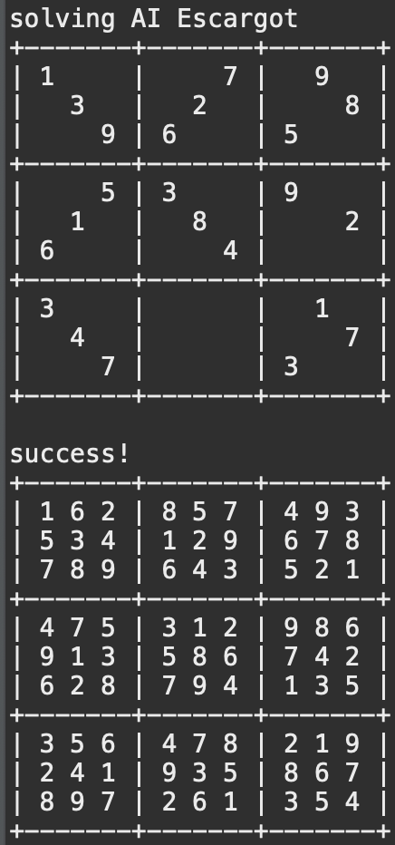

In my ICS 211 class, we discussed about different data structures and some algorithms. We were using Java as the primary programming language and in one of our homeworks, we were asked to implement a recursive method called fillSudoku which, as the name suggests, aims to fill a sudoku correctly.
It took a lot of work to grasp the concept of recursion initially, as we have been using just a bunch of if-else statements to solve homework problems before learning about recursion. However, when I gained an understanding of how recursion works through a PANDA (one of the ACM Manoa organizations) meeting, I was able to appreciate it more, and I was able to accomplish this particular homework.
public static boolean fillSudoku (int [] [] sudoku)
{
// BASE CASE: Check if the sudoku is filled and valid
// If the sudoku is filled, return the result of the checkSudoku (sudoku, false)
if(SudokuTest.isFilled(sudoku)) {
if(checkSudoku(sudoku, false)) {
return true;
}
}
// FIND NEXT EMPTY CELL: Search for a cell that is 0
boolean allFilled = true;
int row = 0;
int col = 0;
for (int i = 0; i < sudoku.length; i++) {
for (int j = 0; j < sudoku[i].length; j++) {
if (sudoku[i][j] == 0) {
row = i;
col = j;
allFilled = false;
break;
}
}
if(!allFilled) break;
}
// FIND POSSIBLE VALUES FOR THE EMPTY CELL
java.util.ArrayList<Integer> values = getValues(sudoku, row, col);
// TEST VALUES: Try all possible values from Step 3 and recursively call fillSudoku() with each possible value
// When we recursively call fillSudoku(), it will return true if we found a valid solution, and false otherwise.
// If it fillSudoku() returns true, return true for this method call as well
// Otherwise reset the cell value to 0, and try the next possible value
for (int i = 0; i < values.size(); i++) {
sudoku[row][col] = values.get(i);
if (fillSudoku(sudoku)) {
return true;
}
else {
sudoku[row][col] = 0;
}
}
// RETURN FALSE: If we cannot return true during the above code, it means we can't solve the sudoku
return false;
}
